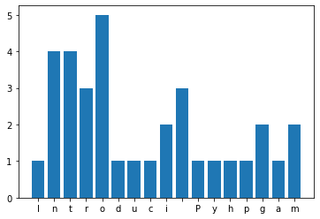

Histogramme¶
La fonction hist permet de visualiser la répartition d’une variable. Elle distribue les échantillons en un certain nombre de classes.
import matplotlib.pyplot as plt
import numpy as np
Analyser 10000 points¶
Nous analysons une distribution gaussienne de 10’000 points.
mu, sigma = 100, 15
x = mu + sigma * np.random.randn(10000)
plt.plot(x, 'o');
Ces points sont situés autour d’une moyenne de 100, avec une déviation standard de 15.
plt.hist(x, 50, density=1, facecolor='g', alpha=0.75)
plt.xlabel('Smarts')
plt.ylabel('Probability')
plt.title('Histogram of IQ')
plt.text(60, .025, r'$\mu=100,\ \sigma=15$')
plt.axis([50, 150, 0, 0.03])
plt.grid(True)
Distribution normale¶
n=1000
y = np.random.randn(n)
plt.title('Distribution normale')
plt.grid(True)
plt.hist(y, 40);
Distribution uniforme¶
n = 1000
y = np.random.rand(n)
plt.title('Distribution uniforme')
plt.hist(y, 10, facecolor='pink');
plt.grid();
Fréquence de lettres¶
Un dictionnaire est une structure qui permet de compter facilement les lettres dans une phrase.
s = 'Introduction to Python programming'
d = {}
for c in s:
d[c] = d.get(c, 0) + 1
Ceci nous permet de dessiner un histogramme.
plt.bar(d.keys(), d.values());

Histogramme superposé¶
Avec l’option bottom nous pouvons superposer un graphique en barres sur un autre. Avec l’option yerrnous ajoutons une barre d’erreur.
labels = ['G1', 'G2', 'G3', 'G4', 'G5']
men_means = [20, 35, 30, 35, 27]
women_means = [25, 32, 34, 20, 25]
men_std = [2, 3, 4, 1, 2]
women_std = [3, 5, 2, 3, 3]
width = 0.35 # the width of the bars: can also be len(x) sequence
fig, ax = plt.subplots()
ax.bar(labels, men_means, width, yerr=men_std, label='Men')
ax.bar(labels, women_means, width, yerr=women_std,
bottom=men_means,
label='Women')
ax.set_ylabel('Scores')
ax.set_title('Scores by group and gender')
ax.legend()
plt.show()